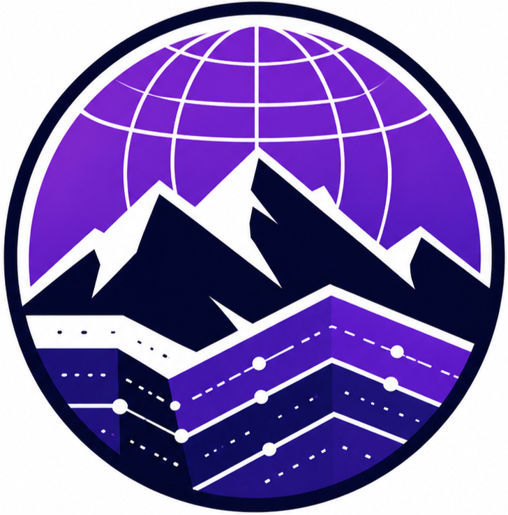

Modelagem 3D e seção transversal interativa do sistema intrusivo (sill/dique) de Taió — Mestrado em Geologia, UFSC.
Mapa em tela cheia com zoom/pan contínuo (Leaflet): pontos de campo, mapa geológico real (CPRM), sill/dique, dados estruturais e camadas de referência (rios/estradas/localidades).
GitHub ↗Painel com dados geoquímicos do sistema intrusivo de Taió, com visualizações para exploração dos elementos e relações geoquímicas.
GitHub ↗